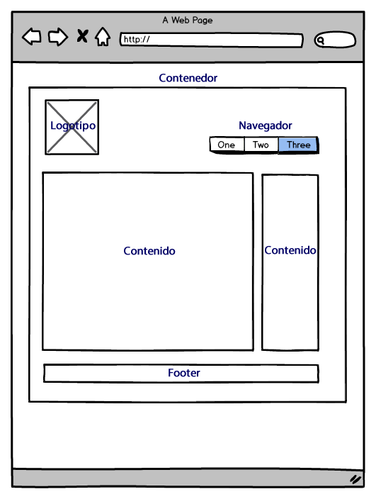
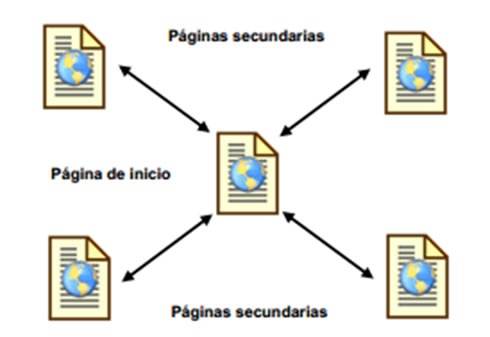
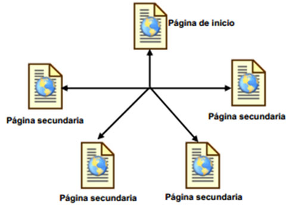

Planificacion
Antes de crear un conjunto de páginas web uno ha de tener una idea clara de cómo va a ser la estructura de dichas páginas, es conveniente hacer algún esquema sencillo, para la mayoría de los casos una hoja de papel y un lapicero bastará, pero si el emplazamiento va a albergar un gran número de páginas es recomendable usar algún tipo de programa que permita manejar estructuras de tipo grafo.
Informacion
No es lo mismo crear una estructura de navegación para un sitio que desea publicar información al estilo de un libro cuya estructura estará formada por capítulos, este tipo de información se adapta bastante bien a una estructura lineal como jerárquica. Mientras que un sitio donde se expone un tutorial o un tour es más apropiada una estructura de tipo lineal.
Diseño
La página web y su constitución Lo que define el diseño de una página web es la forma de organizar los elementos que la componen. Hay miles de formas diferentes, pero son pocas las que funcionan y adquieren el sentido que necesitamos para nuestro trabajo. Podemos recurrir a estructuras como Bootstrap o 960grid para tener un apoyo importante. Hoy en día hay muchos frameworks con los cuales podemos basarnos a la hora de diseñar un nuevo proyecto. Básicamente, los sitios web se componen y estructuran de la siguiente manera: 
Contenedor
Esto es lo que definimos en la regla Body o en algun div de nuestra estructura. Dentro de este contenedor estarán todos los elementos del sitio; módulos, contenidos, imágenes, etc. Este contenedor puede tener un ancho fijo; el ancho será igual para todos los navegadores y dispositivos, o uno fluido que se adaptará al ancho de nuestra ventana. Si usamos web responsive, podemos manejarlo con CSS sin problemas.
Logotipo
Acá es dónde debemos dejar la imagen de la empresa, que identificará la marca en todo el sitio. Puede ser el logotipo de la empresa o el nombre. Al estar arriba acompañara la navegación por todo el sitio ayudando al reconocimiento de la marca.
Navegacion
Que importante es la navegación y el menú que la contiene. La forma más aceptada y fácil, es el menú horizontal, que siempre tiene a mano lo más importante del sitio web. Los menús verticales pueden usarse como complementos o sub menús, de los horizontales, y siempre cerca de la línea horizontal del menú principal y deben ser visibles en el primer pantallazo, al entrar.
Contenido
Lo más importante y fundamental de una buena página. Lo que mantiene al visitante cautivo e interesado. Si el contenido es malo o poco interesante, abandonará la página en pocos segundos. Para eso, debe estar centralizado y enfocado y a la primera vista. El mejor lugar debe ser para los contenidos. Para Google, el contenido es el rey.
Footer
Localizado al final del sitio, abajo, generalmente dejamos ahí información de Copyright y legales o menús secundarios. Aunque en los últimos años, se usa mucho para incluir información de redes sociales, direcciones, noticias.
Espacio negativo
Esto es tan importante como el espacio positivo. También llamado espacio blanco, es todo lo que no tiene información de ningún tipo, pero que cumple un rol importantísimo para la web; nos ayuda a tener espacios de respiración, a equilibrar y dar balance a todo el diseño. Si eres novato, o tu cliente es ignorante en la materia, tratará de llenar esos espacios, con la consiguiente saturación de contenidos, dejando una web ilegible e innavegable.
Estructura lineal
Esta estructura consiste en una línea recta que recorre el sitio desde la página de inicio hasta la página final. Es muy útil cuando se desea que el lector siga un camino fijo y guiado, además el de impedir que se distraiga con enlaces a otras páginas. Por otra parte se puede causar al lector la sensación de estar encerrado si el camino es muy largo o poco interesante.

Estructura Jerárquica
La estructura jerárquica, como se observa en la siguiente figura:
 Es la típica estructura de árbol, en el que la raíz es la página de bienvenida,
ésta se puede también sustituir por la de contenido, en la que se exponen las diferentes secciones que contiene el sitio.
La ventaja de esta estructura es que el usuario siempre está ubicado y puede moverse fácilmente por el sitio.
Gracias a que la mayoría de las páginas secundarias permiten regresar a la página de inicio, los visitantes controlan completamente la navegación.
Es la típica estructura de árbol, en el que la raíz es la página de bienvenida,
ésta se puede también sustituir por la de contenido, en la que se exponen las diferentes secciones que contiene el sitio.
La ventaja de esta estructura es que el usuario siempre está ubicado y puede moverse fácilmente por el sitio.
Gracias a que la mayoría de las páginas secundarias permiten regresar a la página de inicio, los visitantes controlan completamente la navegación.
Estructura Radial
En este modelo las páginas secundarias no se conectan entre sí, y se debe navegar por la página principal para ir de una secundaria a otra, es decir, la principal contiene enlaces a todas las secundarias, pero las secundarias sólo contienen un entorno a la principal, tal cual se aprecia en la figura que sigue:  La ventaja de esta estructura es que facilita la navegación, los visitantes sólo tendrán que efectuar uno o dos clics para retornar a la página principal; sin embargo, esto podría también ser un inconveniente porque obliga al usuario a regresar siempre a la página de inicio.
Estructura de Red
En ella se plantea un modelo en el que todas las páginas están relacionadas entre sí. Es una estructura ideal para sitios especializados en un tema, en la que se le permite al usuario una navegación libre y sin limitaciones como la que vemos a continuación: 